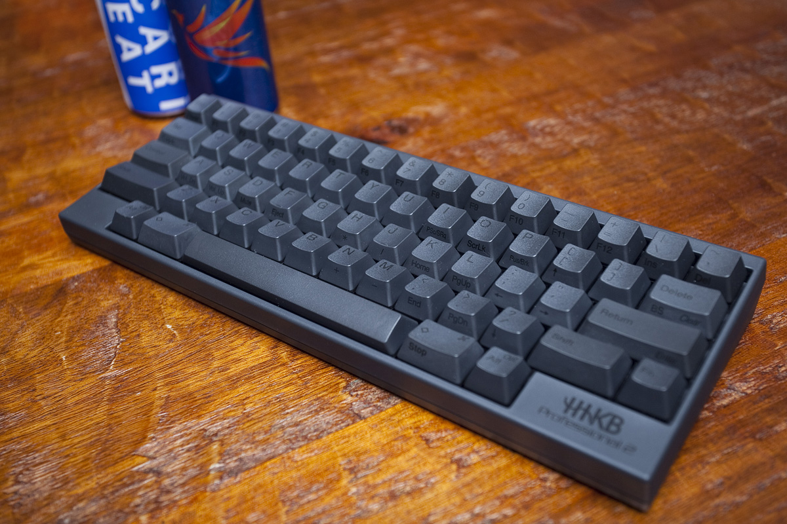

There were many years in my professional and person life where I missed the feeling of keyboards from my childhood. I love the mechanical tactility and audible glory they produce. It's great to see so much choice and customization available if you wish to have a tailored experience and makes work that much more enjoyable.

The HHKB line of keyboards are not technically mechanical, but still free great. I have modified mine, and documented my approach here. After posting the article to the r/MechanicalKeyboards, someone gilded me for my effort, and I received a lot of feedback for my approach. Since then, I have revised my approach, using card stock of a more appropriate thickness to accomplish even better results.